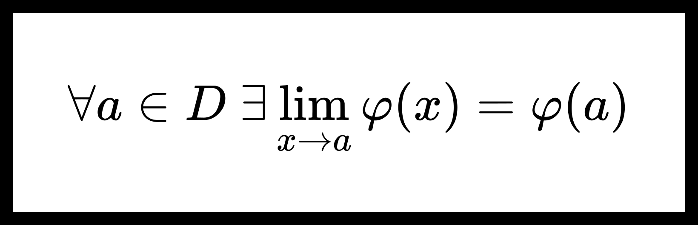

Равномерный предел непрерывных функций.
Теорема о непрерывности равномерного предела непрерывных функций.
Теорема. О непрерывности равномерного предела непрерывных функций.
Пусть D⊆Rp, E⊆Rq, а b — предельная точка множества E. Пусть дана функция F(x,y):D×E→Rs, для которой верно:
-
∀y∈E функция F(x,y) непрерывна по x в D;
-
F(x,y)y→b⇉x∈Dφ(x).
Тогда функция φ(x) непрерывна в D.
Доказательство:
Пусть a∈D. Покажем, что ∃limx→aφ(x)=φ(a).
Из условий теоремы:
-
∀y∈E ∃limx→aF(x,y)=F(a,y);
-
F(x,y)y→b⇉x∈Dφ(x).
Получим, что для F(x,y) выполнены условия теоремы о равенстве повторных пределов, поэтому существуют и равны повторные пределы
x→alimy→blimF(x,y)=y→blimx→alimF(x,y).
Из утверждений 1,2 также следует, что
x→alimy→blimF(x,y)=x→alimφ(x),
y→blimx→alimF(x,y)=y→blimF(a,y)=φ(a).
Можем заключить, что
∃x→alimφ(x)=φ(a).
Непрерывность равномерного предела функциональной последовательности.
Следствие 1. Непрерывность равномерного предела функциональной последовательности.
Пусть {fn(x)}n=1∞ — функциональная последовательность из непрерывных на множестве D функций.
Тогда, если fn(x)n→∞⇉x∈Dφ(x), то предел φ(x) — непрерывная на множестве D функция.
Непрерывность суммы равномерно сходящегося ряда.
Следствие 2. Непрерывность суммы равномерно сходящегося ряда.
n=1∑∞fn(x).(1)
Если функциональный ряд (1) сходиться равномерно в D, а {fn(x)}n=1∞ — непрерывные в D функции, то сумма ряда (1) есть непрерывная функция.